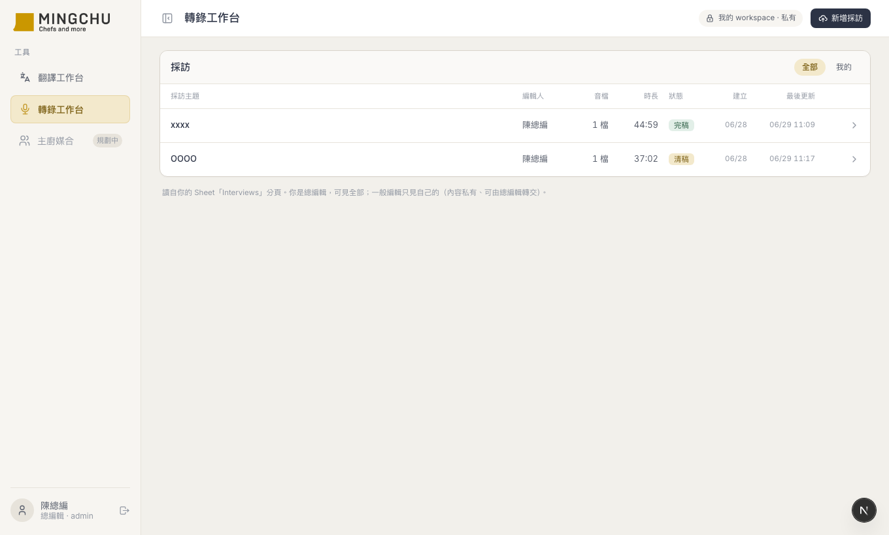
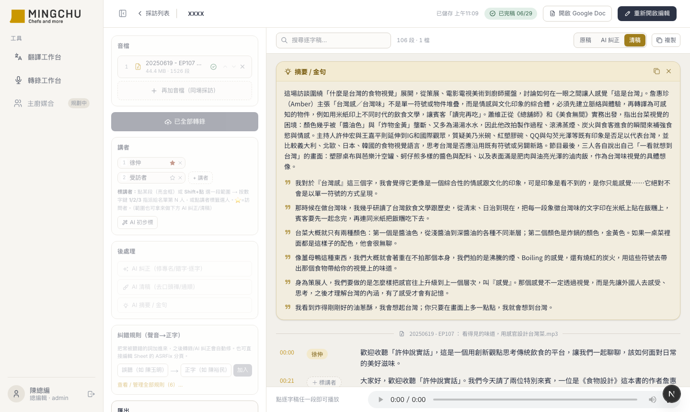

名廚採訪轉錄工作台
純對話協作，幫客戶「名廚 MINGCHU」做出一個採訪轉錄工作台——多檔錄音上傳、whisper 轉成帶時間碼的逐字稿、標講者／AI 糾正／清稿／抓金句，再一鍵完稿生出正式的 Google Doc。採訪全部存進客戶自己的 Google Sheet + Drive，重整不丟、隨時點開繼續編。我不寫程式，只負責產品決策與提供真實情境。

為什麼要做這件事
驅動我的不是「想做個轉錄功能」，而是幾個真實的編輯痛點。名廚是以廚師為核心的飲食媒體，常做主廚採訪，一場錄音要變成逐字稿、清稿、抓金句，再交一份正式稿：
- 聽打太慢：一小時的採訪人工逐字聽打要好幾小時。
- 通用工具的專名很爛：名廚常聊飲食文化，夾很多英文／義大利文專名（Genova、pesto…）。通用轉錄丟下去，英文常被「逐字母音譯」拼成亂碼。
- 轉完還有一大段手工：誰在說（講者）、哪些詞聽錯（專名）、口頭禪要不要去掉——全要人再整理一遍。
- 最後要一份「正式稿」：給編輯／客戶的，不是一堆零碎逐字。
我已經幫同一個客戶做過營收儀表板和翻譯工作台，驗證過「Next.js + Google（Sheet/Drive）+ Vercel」這套，所以這次直接沿用——採訪資料全部存在客戶自己看得到的 Google Sheet + Drive。工具不是黑盒子，資料權還在客戶手上。
最終樣貌
一條龍，全部在工具裡完成：
- 上傳即轉錄：拖音檔進來，瀏覽器內自動壓縮、用 whisper 轉成帶時間碼的逐字稿；一場採訪可掛多個音檔，合併成一份對齊的逐字稿。中英混講也準。
- 段落化 + 自動補標點：whisper 的中文沒標點，工具自動切成好讀段落並補上標點；段落切錯了，編輯時把游標移到換人處按 Enter 就能手動分段（可復原）。
- 標講者：建好人物名單，點某段（金框）或 Shift+點一段範圍 → 按數字鍵 1/2/3 指派講者；也能讓 AI 先猜一輪再修。
- AI 糾正 / 清稿（並存不互蓋）：逐字稿留作查證、清稿去口頭禪給寫作用；可只針對「框選的幾段」重跑，不動其他段。
- 一鍵摘要 / 金句、存檔 / 重開 / 刪除：抓出整場重點與金句；採訪存進 Sheet + Drive，列表隨時點開繼續編。
- 完稿：一鍵生出正式的 Google Doc 組織稿 + 逐字稿存查檔，歸進 Drive「完稿」資料夾。完稿後介面軟鎖，要改先「重新開啟編輯」。

系統架構
整條流程「什麼跟什麼串在一起」，核心是 Drive＝倉庫（放大檔／成品）、Sheet＝帳本（放列表／狀態／門牌）。前端一律透過自家後端 route 呼叫、金鑰不進前端：
技術選型
| 工具 / 技術 | 選的理由 |
|---|---|
| whisper（OpenAI 原生 API） | 中英混講最準（實測完勝 Deepgram）；走原生才拿得到段級時間碼（跳播／段落化要用）。Deepgram 留著當備援，沒丟 |
| Google Drive（Shared Drive） | 音檔、逐字稿主檔、完稿檔都是大檔，放物件儲存；沿用既有 Service Account。必須是共用雲端硬碟（個人 Drive 配額會爆） |
| Google Sheets 當帳本 | 採訪列表／狀態／編輯人／門牌；團隊在網頁或 Sheet 改都同步，資料權留客戶 |
| Vercel Pro | 函式上限 60s→300s，長檔一次轉完，省掉整套非同步架構 |
| ffmpeg.wasm | 在瀏覽器端壓縮音檔，減少上傳量與轉錄成本 |
| Next.js 16 + React 19 + Tailwind | 沿用同客戶驗證過的那套，AI 最熟、踩坑最少 |
外部服務與金鑰
跑起來之前需要先準備的東西：
OPENAI_API_KEYOPENROUTER_API_KEYGOOGLE_SHEET_IDDRIVE_FOLDER_ID·SA 須加為內容管理者DEEPGRAM_API_KEYAI 怎麼幫我做的
我一行 code 都沒寫——我做的是產品決策和提供真實使用情境，AI 負責全部實作、實測、除錯。
- 寫所有程式碼、設計架構
- 拿真實採訪音檔實測引擎品質
- 重現問題、追根因
- 多引擎 A/B、用數據說話
- 定要哪些功能、UX 怎麼走
- 引擎與架構取捨的原則、最後拍板
- 提供真實採訪音檔當測試
- 用截圖指問題、逐波打磨
- 截圖驅動型：直接把工具畫面截圖圈起來——「這個欄位太寬」「這顆按鈕在 27 吋上一片空白」「Drive 裡每種檔怎麼有兩個」。比打字描述精準十倍，AI 一看就知道在指哪。
- 症狀描述型：「點逐字稿按數字鍵標講者沒反應」——把現象丟出去，讓 AI 去重現、查根因，而不是我猜。
- 決策諮詢型：「中英混講該用哪個引擎？」「升 Vercel Pro 是不是就不用做長檔處理了？」——要求 AI 先拿真實音檔／算清楚再一起拍板，不憑感覺。
1. 一個「要不要升方案」的問題，改寫了整個長檔架構。原本規劃書寫的是「長檔走非同步：丟給 ASR 廠商當 queue、webhook 回結果」——複雜、而且 webhook 本機根本測不了。我隨口問了一句「升 Vercel Pro 是不是就不用搞這個了？」AI 算清楚：Pro 把函式上限拉到 300 秒，再加上「音檔反正已經在 Drive、把轉錄改成從 Drive 讀」就繞過上傳大小限制——一整套非同步架構，被一個訂閱 + 一個小改動取代了。
2. whisper-only 的轉向，來自一張截圖。一開始做的是「單人用 whisper、雙人用 Deepgram」雙引擎。我把一段真採訪（聊義大利料理、中英混講）的 Deepgram 結果截圖丟給 AI——英文被逐字母拼成亂碼（Genova→「j en na va」）。AI 又拿合成音檔做 A/B，證實 whisper 對混講完勝。於是砍掉雙引擎、改 whisper-only，介面瞬間乾淨，Deepgram 程式留著當備援。
3. 一句「倉庫 vs 帳本」讓儲存設計收斂。在討論「完稿後逐字稿是不是變成一個正式檔案放倉庫」時，把兩種東西分清楚：能被工具重新打開的「工作主檔」（JSON），跟給人看的「正式交付物」（Google Doc）。Drive 是倉庫、Sheet 是帳本、Sheet 只存門牌——這個框架一立，整個「存檔／重開／完稿」的設計一下子全清楚了。
踩到的坑，讓我更懂的事
根本原因：兩件事。一是數字鍵綁的是「正在播放的那段」，沒播放就沒目標；二是它用 forward-fill——標一段會一路沿用到下次換人。
解法：改成「點段＝選定那一段（金框）、Shift＋點＝選一段範圍」，數字鍵標的就是你選的；拿掉 forward-fill。
根本原因：Sheets 寫入用 USER_ENTERED 會自作主張去「解析」你的字串，把看起來像時間／日期的東西轉成它的格式。
解法：時長寫入前加個前置單引號強制當文字、讀回再剝掉；日期拿去當檔名前先去斜線。
根本原因：① 雲端平台的後端有「請求大小上限」（約 4.5MB），大檔不能直接 POST 給自家後端；② 改讓瀏覽器直接傳去 Google Drive，又被瀏覽器的跨來源安全機制（CORS）擋下。
解法：後端先去跟 Drive 要一個「上傳通道」、而且要求時帶上瀏覽器的來源（Origin），Google 才會回允許跨來源的標頭，瀏覽器才能把檔案直接送上去。播放也走自家的「私有代理」串回來，檔案不公開。
根本原因：「產生檔案」每次都是新增，不會覆蓋舊的。
解法：完稿前先把同名的舊檔清掉（丟垃圾桶，可救回）再產生新的一套。
Takeaway
把 AI 當「實作 + 實測 + 除錯」的夥伴，自己守住「產品決策 + 真實情境」。這次最有效的三個動作是——用截圖指問題（比文字描述精準太多）、遇到怪事用症狀描述讓 AI 重現查根因、要做選擇時要求 AI 拿真實音檔 A/B、用數據說話。還有一個意外好用的：對「看起來很複雜的方案」多問一句「有沒有更簡單的做法／升個方案能不能繞過」——這次就把一整套非同步架構問掉了。
- 「這個架構好像很複雜——有沒有更簡單的做法？升某個方案、或換個角度，能不能直接繞過這個問題？」（逼 AI 挑戰自己的假設，常常能省掉一整塊。）
- 「我把畫面截圖給你，這裡怪怪的，幫我重現 + 查根因，不要用合成測資、用接近真實的內容測。」